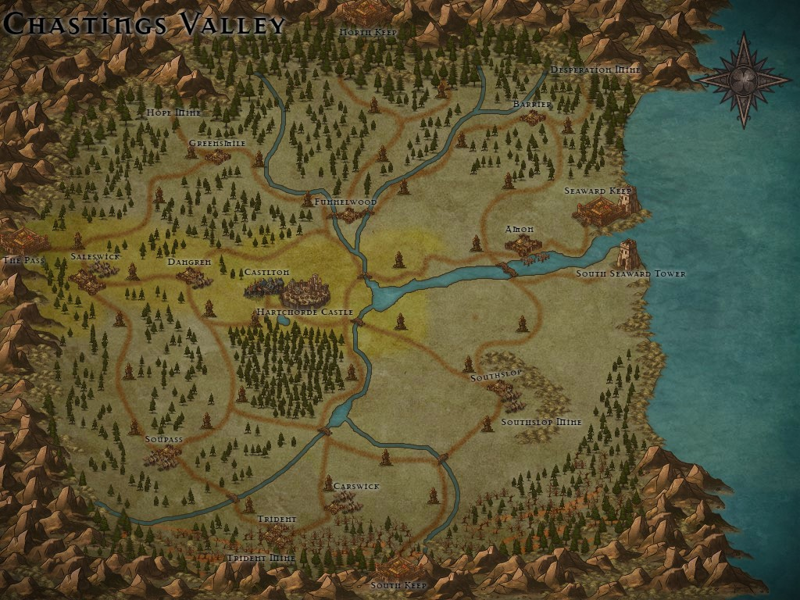

The Valley Revitalized: A Place To Settle
Chastings Valley is aggressively pursuiing restoration and growth. All towns are protected by either wood or stone curtain walls due to historical Trollish threats.


Thriving & Successful Communities
| Town | Key Features & Current Status (As of Dragonflight) |
Appeal |
|---|---|---|
| Casilton | Fully rebuilt, bustling, boasts municipal indoor plumbing and waste management. | High Security & Modern Amenities. |
| Saleswick | The valley's historical trade center. Features a theater and open-air pavilion. Fully plumbed. | Cultural Hub & Trade Opportunities. |
| Dangren | A successful and picturesque farming community with a market, inn, and strong walls. | Agricultural Riches & Scenic Beauty. |
| Amon | Fully renovated fishing village with sturdy stone walls and a modest tower. Developing a new road for wider ocean trade. | Coastal Living & Future Growth. |